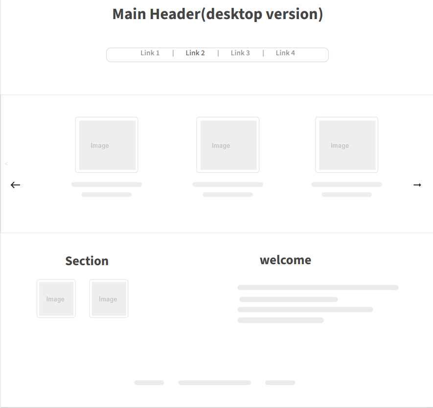
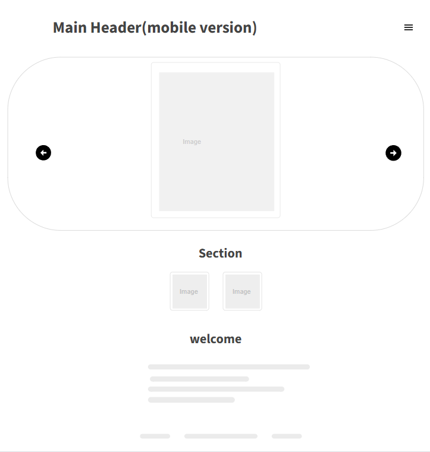

Site Name
I selected this site name because my name is Sophie, the site is about cooking and it's about simple recipe that I do on a daily basis woth a little bit about myself and where I find the recipe like a small diary.
Site Purpose
This site will propose in the main page all my recipe (the two new monthly recipe and a welcome message), when clik they will take you to the full recipe with a little bit about why this recipe. Where I find it, who give it to me or the story behind why I love it so much. A form to subscribe to a monthly email with the update of the website and a fruit or vegetable of the month recipe. A page with the easiest recipe ( 4 or under ingredients), a page with my latest recipe (sweet and savory), and a page with recipe for the fruit and vegetables of the season.
Scenarios
How to be updated on the new recipe?
How to cook seasonal fruit and vegetable?
I don't have much time, what's an easy and tasty recipe?
Color Scheme
body backgroung color: light grey rgb(241, 238, 238);
paragrah, headings : black;
accent (banner for images,...): red rgb(219, 37, 37);
contour of images : white
Typography
h1 and h2 : dancing script
paragraph, navigation menu: josefin sans
Wireframe
https://app.moqups.com/yMY7IO24RLagkSgKEZ8l4ZRb3cDe3pEA/view/page/a57f5c842

